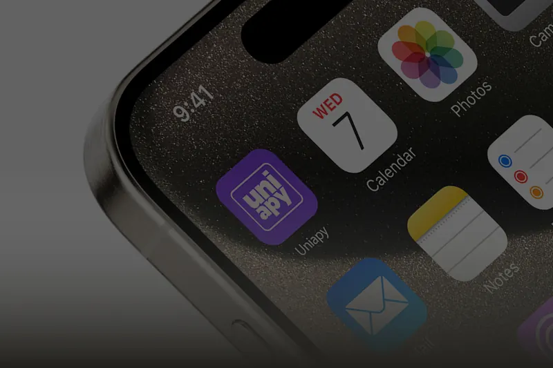
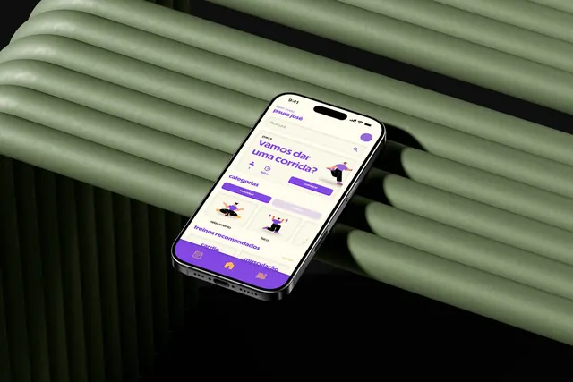
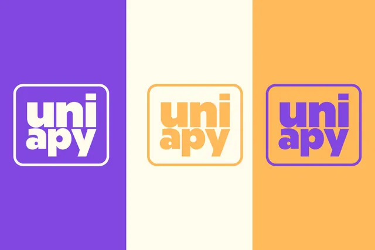
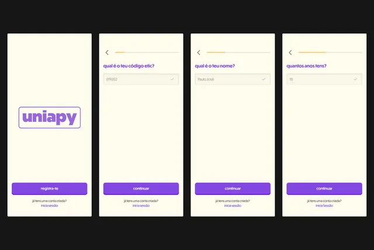
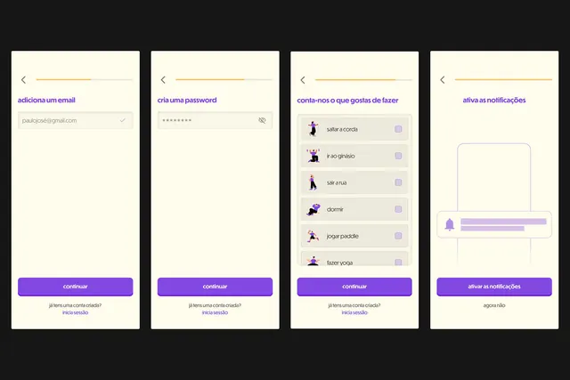
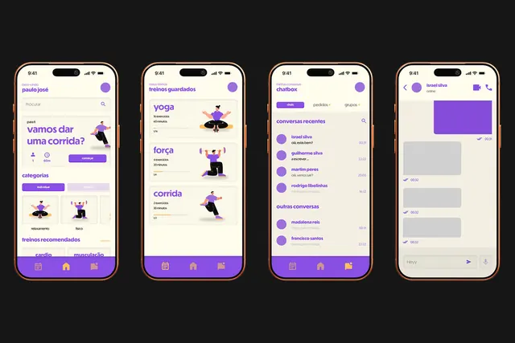
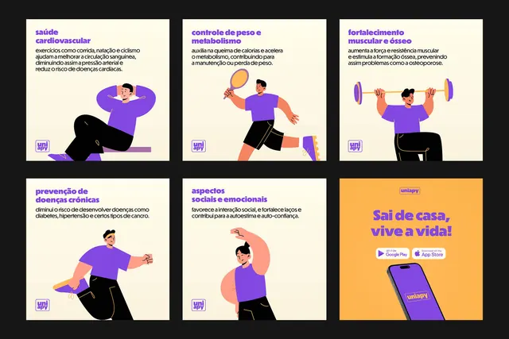
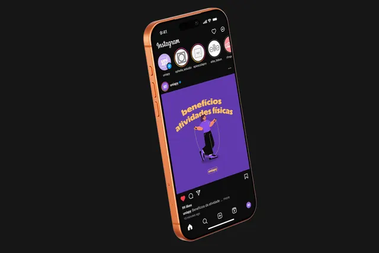

UNIAPY
Foi desenvolvida uma aplicação autossustentável que gera eventos e encontros com várias pessoas, de acordo com os seus gostos, limitada aos alunos da ETIC, que conta com o apoio de AI na sua gestão e organização dos eventos.
- Especialidades
- Identidade visual e branding, campanhas de comunicação e publicidade, UI/UX design

Sobre o projeto
A aplicação visa incentivar a inclusão de indivíduos socialmente isolados, ou que possam sentir-se isolados, ou que possam sentir dificuldade de socialização num contexto universitário, de forma a impulsionar um ambiente propício ao bem-estar psicológico e físico através destes encontros. O objetivo é proporcionar um ambiente seguro e acessível para os alunos da ETIC, onde os utilizadores possam encontrar grupos e indivíduos com interesses em comum, com os principais objetivos de promover o bem-estar, inclusão e fortalecimento de laços sociais.






Projeto seguinte
01 / 05